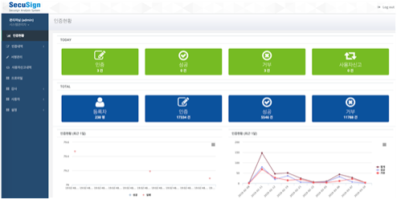
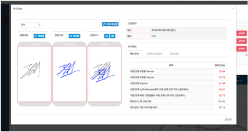
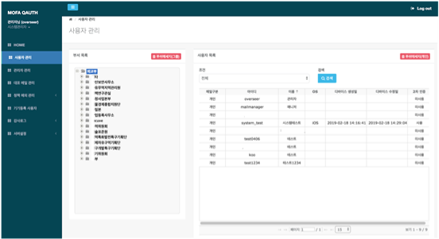
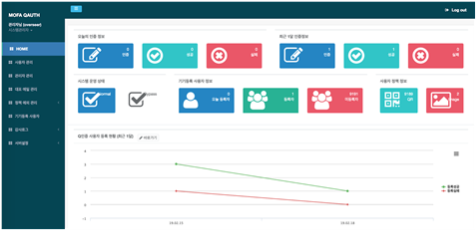

매월 1일 도는 재학습 파이프라인입니다. 위 전처리 판정은 이 중 선처리 단계에서 수행되고,
학습 이후 리포트 생성과 모델 아카이빙까지 같은 실행 안에서 이어집니다.
문제
매월 재학습되는 모델에서 지표는 올라가는데 현장에서는 정상 파일이 차단되는 상황이 반복됐습니다.
ROC-AUC와 F1만 보고 있으면 이 현상을 배포 전에 잡을 수 없었습니다.
판단
원인을 모델이 아니라 학습 데이터로 봤습니다. 누적 100만 건에 2단계 필터를 두어,
직전 배포 모델이 이미 탐지하는 샘플은 제외하고 128차원 임베딩 1:N 검색으로 정상 군집을 오염시키는 위장 악성과 OOD 샘플을 배제했습니다.
위장 악성은 재학습으로 임계값을 옮겨도 미탐이 남는다고 봐서 추론 앞단에 denylist 선차단을 뒀는데, 여기서도 저장 방식을 나눴습니다.
정상 위장은 근사 변종까지 잡아야 하니 SHA-256과 벡터를 함께 저장하고,
완전 이상치는 오매칭 위험이 더 크다고 판단해 SHA-256만 저장했습니다.
확인
정상 PE를 기준선으로 등록해 버전별 과탐 드리프트를 감시하는 체계를 만들었고,
이전 모델이 0.99로 과탐하던 정상 실행파일이 0.0003으로 내려갔습니다.
오탐이 나면 원인 피처까지 역추적해 버전 간 회귀 여부를 기록으로 남깁니다.
2026.06 ~ 현재에스엠테크놀러지
악성코드 통합 분석 기능 개발
확률 하나로는 왜 차단했는지 설명할 수 없었던 경우
제품 UI 캡처 위치 shots/malware-analysis.png
문제
탐지 결과가 단일 확률값이라 분석 담당자가 판정 근거를 확인할 방법이 없었습니다.
오탐 문의가 오면 모델이 그렇게 판단했다는 말밖에 할 수 없는 구조였습니다.
판단
정적 분석 결과에 LightGBM 점수, 이상치 점수, 유사도 점수를 함께 제시하는 다중 지표 판정으로 바꿨습니다.
여기에 임베딩 유사 벡터 Top-20을 붙여 과거 유사 사례를 보여주고, LLM으로 그 사례를 해석해 근거를 문장으로 제공했습니다.
정적 피처만으로 설명이 부족한 샘플은 CAPEv2 샌드박스를 직접 구축해 동적 행위를 수집하고
MITRE ATT&CK에 매핑해 공격 단계별로 분류했습니다.
확인
공개 CAPE 리포트 코퍼스(약 4.9만 건)에 자사 리포트를 대조 검색해,
생성된 행위 해석이 알려진 기법 분류와 어긋나지 않는지 확인하는 구조로 검토하고 있습니다.
2026.03 ~ 2026.05에스엠테크놀러지
PE 실행파일 유사도 검색 및 MLP 기반 이상치 탐지 엔진 개발
재학습이 답이 아니라고 판단해 문제를 다시 정의한 경우
제품 UI 캡처 위치 shots/pe-similarity-engine.png
문제
LightGBM이 예측 확률 0.3~0.5 구간에서 정상 파일을 차단하는 오탐이 반복됐습니다.
처음 나온 대응안은 재학습이었습니다.
배포 쪽에도 제약이 있었습니다. 자사 에이전트가 Rust로 리뉴얼된 상태였는데,
추론에 쓰던 ONNX Runtime은 200MB 규모의 런타임 의존성을 요구해 설치형 배포에 부담이 컸습니다.
판단
재학습은 임계값을 옮길 뿐 확신 없는 구간 자체를 없애지 못한다고 봐서,
확률로 답할 수 없는 구간에는 판단 근거를 제시하는 보조 엔진이 필요하다는 쪽으로 문제를 다시 정의했습니다.
EMBER 2,381차원을 ArcFace 손실 기반 MLP로 128차원 압축해 유사 사례를 검색하는 구조를 만들었고,
이상치는 Top-K 코사인 거리로 3-Case 분류를 두어 어떤 종류의 이상인지까지 구분했습니다.
경계 케이스는 자동 판정하지 않고 절대 하한값과 Top-1 유사도 OR 게이트로 격리 큐에 라우팅했습니다.
애매한 건 사람에게 넘기는 편이 낫다고 봤습니다.
Vector DB는 4종(sqlite-vec · hnsw_rs · faiss-hnsw · usearch)을 벤치마크한 뒤
가장 빠른 것이 아니라 설치형 배포에 부담이 없는 sqlite-vec을 택했습니다.
런타임 의존성은 ONNX Runtime을 걷어내고 Rust 네이티브 인코더로 전환해 해결했습니다.
Rust 실무 경험이 없었기 때문에 코드를 쓰기 전에 채택 기준을 먼저 정했습니다.
구현은 AI 페어 프로그래밍으로 가속하되, 기존 파이썬 구현과 같은 값을 낸다는 것이 확인되지 않은 코드는 반영하지 않았습니다.
낯선 언어일수록 "동작한다"가 아니라 "기존과 같은 값을 낸다"가 기준이어야 한다고 판단했습니다.
Scaler와 BatchNorm을 융합해 전처리까지 네이티브로 옮겼고, 설계와 알고리즘 선정, 성능 검증은 직접 했습니다.
확인
인코더 ROC-AUC 0.93, KNN(K=5) 95.4%. INT8로 후보를 좁히고 코사인으로 재정렬하는 2단계 검색으로
60만 건 쿼리 13.73초 → 0.66초, 저장 용량 85% 절감.
Rust 인코더는 기존 파이썬 구현 대비 출력 오차 max 1e-7까지 대조 검증했고,
추론 27% 개선과 200MB DLL 제거로 런타임 의존성을 0으로 만들었습니다.
전체 파이프라인을 처음부터 재실행해 재현성까지 확인했습니다(ROC-AUC +0.9%).
2025.11 ~ 2026.02에스엠테크놀러지
공공기관 문서 관리용 RAG AI 에이전트(DocStory Insight) 설계 및 개발
폐쇄망과 소형 모델이라는 제약 안에서 정확도를 올린 경우
제품 UI 캡처 위치 shots/rag-docstory.png
문제
공공기관 내부 문서를 다뤄야 해서 외부 API를 쓸 수 없었고, 로컬에서 돌릴 수 있는 소형 모델은
응답이 느리고 환각이 잦았습니다. 별도 학습 없이 문서를 활용할 방법이 필요했습니다.
여기에 더해 폐쇄망 소형 모델은 자사 솔루션 정보도, 최신 위협 인텔리전스도 알지 못했는데,
이것 때문에 모델을 다시 학습시키는 건 비용도 주기도 맞지 않았습니다.
판단
수집 · 청킹을 맡는 에이전트와 검색 · 응답을 맡는 서버를 분리해, 폐쇄망 안의 로컬 LLM 서빙 위에 올렸습니다.
문서는 unstructured로 [문서제목] · [핵심키워드] · [내용] 포맷으로 파싱하는 구조적 청킹을 적용했습니다.
정확도는 모델을 키우는 대신 검색 단계에서 올렸습니다. Reranker는 Listwise 방식과 비교한 뒤
문서-질문 상호작용 정확도를 우선해 Cross-Encoder를 택했고,
임베딩 검색이 수치나 고유 용어의 완전 일치에서 실패하는 것을 확인해 키워드 검색을 병행했습니다.
환각은 없앨 수 없다고 보고 검증 가능하게 만드는 쪽을 택해, 참고한 청크 목록과 실제 문서 경로를 응답과 함께 표시했습니다.
모델이 모르는 정보는 학습시키는 대신 필요할 때 물어보게 만드는 쪽을 택해,
Python SDK(FastMCP)로 MCP 서버를 직접 구축했습니다.
자사 솔루션 정보를 제공하는 DocStory MCP와 VirusTotal MCP를 붙여,
LLM이 외부 위협 인텔리전스를 도구(Tool)로 호출하는 구조를 만들었습니다.
같은 워크플로우를 개발 쪽에도 적용해, Claude Code에 Notion MCP를 연동하고
진행사항과 기술 문서가 쌓이는 문서화 파이프라인을 구성했습니다.
확인
전처리 포맷 정규화 수준에 따른 정확도 상승을 실측했고, 서빙툴 · GPU별 벤치마크로 증설 근거를 만들었습니다
(ollama 15.3초 → vLLM 6.7초, GTX 1050 155초 → RTX 3050 15.3초로 약 10배).
이 자료가 하드웨어 투자 판단에 쓰였습니다.
MCP는 stdio와 SSE 두 통신 방식을 각각 검증해 배포 환경에 맞는 쪽을 고를 수 있게 했고,
LLM을 활용 대상이자 개발 도구로 동시에 다루는 워크플로우를 이 과정에서 정립했습니다.
2025.02 ~ 2025.03에스엠테크놀러지
PE 정적 파일 학습 데이터 기반 악성코드 예측 머신러닝 서버 개발
모델을 바꾸려고 제품을 재배포하지 않게 만든 경우
제품 UI 캡처 위치 shots/ml-predict-api.png
문제
모델이 주기적으로 재학습되는데 교체할 때마다 서버를 다시 배포해야 했습니다.
고객사 설치 환경에 Python 런타임을 요구하는 것도 부담이었습니다.
판단
모델을 메모리에 로드해 예측 score를 반환하는 API 서버를 두고,
Spring 솔루션이 RestTemplate으로 score를 받아 임계값 기준으로 차단 리스트를 화이트리스트로 자동 전환하도록 연동했습니다.
모델 교체는 재배포 없이 API로 처리하게 만들었고, 런타임 의존성은 Docker로 감싸 해결했습니다.
확인
교체 API의 전송 방식을 multipart 업로드에서 byte[] 직접 송수신으로 바꿔 대용량 모델 파일의 교체 속도를 개선했고,
바꾸기 전후를 측정해 확인했습니다.
보안 제품 백엔드
에스엠테크놀러지 · 2020.12 ~ 2024.12
2024.07 ~ 2024.12에스엠테크놀러지
인사 DB 연동 기반 부서별 솔루션 정책 관리 기능 개발
정책 단위를 바꾸면서 조회 부하가 옮겨간 경우
제품 UI 캡처 위치 shots/dept-policy.png
문제
보안 정책이 클라이언트(에이전트) 단위로만 걸려서, 조직이 큰 고객사에서는 관리가 현실적으로 어려웠습니다.
판단
외부 인사 DB를 주기 동기화해 부서 단위 정책 매핑으로 확장했습니다.
다만 조직도를 매번 실시간 조회하면 인사 DB 쪽에 부하가 옮겨가는 구조라,
인사 연동 모듈이 조직 JSON String을 주기적으로 저장하는 캐시 테이블을 별도로 설계했습니다.
확인
쿼리 튜닝과 인덱스 최적화를 함께 적용해 정책 조회 속도를 개선했고,
조직 규모가 커져도 조회 시간이 선형으로 늘지 않는지 확인했습니다.
2022.12 ~ 2023.12에스엠테크놀러지
디자인 패턴 적용 및 성능 개선 리팩터링, 테스트 코드 작성
증상은 하나인데 원인이 둘이었던 경우
제품 UI 캡처 위치 shots/log-query-perf.png
문제
대용량 로그 조회가 뒤 페이지로 갈수록 느려졌고, 같은 화면에서 count 쿼리도 함께 느렸습니다.
코드 쪽에서는 로그 타입별 분기와 JPA 중복 코드가 계속 늘어나고 있었습니다.
판단
한 화면의 문제라도 원인이 다르다고 보고 나눠서 접근했습니다.
페이징 지연은 기존 페이징 · No Offset · 커버링 인덱스를 각각 비교한 뒤 커버링 인덱스를 채택했고,
count 지연은 쿼리 튜닝으로 해결되지 않아 Spring Scheduler와 Local Cache로 조회 경로 자체를 분리했습니다.
증상이 하나여도 원인이 둘이면 해법도 둘이어야 한다는 걸 확인한 사례입니다.
CSV 다운로드 지연은 또 다른 문제라 ForkJoinPool 병렬 처리로 따로 풀었습니다.
구조 쪽은 로그 타입별 @PathVariable 분기에 전략 패턴을,
Hibernate JPA 중복 코드에 템플릿 메서드 패턴을 적용해 정리했습니다.
확인
세 가지 페이징 방식을 각각 측정해 비교한 뒤 채택했고,
Controller Layer 테스트 코드를 작성해 CI/CD 배포 전 검증 단계에 넣었습니다.
2022.01 ~ 2022.12에스엠테크놀러지
백엔드 팀 개발 환경 개선
코드 리뷰와 배포를 사람 손에서 떼어낸 경우
제품 UI 캡처 위치 shots/devops-gitlab-jenkins.png
문제
형상 관리 체계와 브랜치 전략이 자리잡지 않아 코드 리뷰를 걸 지점이 없었고,
개발 서버 배포도 매번 수작업이었습니다.
판단
설치형 GitLab 도입을 제안해 코드 리뷰 환경과 Git Flow 브랜치 전략을 먼저 세웠습니다.
리뷰가 걸릴 자리를 만든 다음 Jenkins CI/CD로 개발 서버 자동 배포를 붙였습니다.
순서를 반대로 하면 자동화만 남고 리뷰는 계속 빠질 거라고 봤습니다.
확인
배포 소요 시간이 줄어든 것으로 확인했고, 이후 이 환경 위에 Controller Layer 테스트 수행 단계를 얹었습니다.
2022.01 ~ 2022.06에스엠테크놀러지
자사 솔루션 PHP 웹 서버의 Spring Boot 리뉴얼
다시 만들 기회에 확장 지점을 미리 잡은 경우
제품 UI 캡처 위치 shots/spring-renewal.png
문제
PHP 레거시 웹 서버를 Spring Boot로 옮기는 작업이었습니다.
기능을 그대로 옮기면 기존 제약을 그대로 다시 짊어지게 되는 상황이었습니다.
판단
기존 PHP 코드 기능 분석으로 마이그레이션 범위를 먼저 정의하고,
솔루션 정책과 계정 정책이 나중에 늘어날 것을 전제로 DB를 재설계했습니다.
대시보드 통계는 요청 시점에 집계하지 않고 OS crontab 기반으로 미리 생성해 두었고,
에이전트와의 통신은 Runnable 기반 소켓 서버로 처리했습니다.
확인
이후 정책 기능이 추가될 때 스키마 변경 없이 확장되는지를 기준으로 판단했습니다.
2020.12 ~ 2022.12에스엠테크놀러지
자사 솔루션 국정원 보안적합성 검증 시험 프로젝트
나눈 뒤에도 서로의 구현을 알고 있어야 했던 경우
제품 UI 캡처 위치 shots/security-verification.png
문제
국가 · 공공기관 납품의 필수 관문인 국가정보원 보안적합성 검증이었고,
검증 항목이 개별 기능이 아니라 솔루션 전반에 걸쳐 있었습니다. 입사 첫해였습니다.
판단
요구사항을 분석해 담당 영역을 나누되, 나눈 뒤에도 서로의 구현을 이해하는 상태를 유지하는 데 시간을 썼습니다.
제가 맡은 DB 접속 정보 암복호화 키의 사용 · 폐기 처리, 세션 하이재킹 방어(최초 접속 IP와 세션 ID 검사),
패스워드 정책 유효성 검사는 다른 팀원의 인증 흐름과 맞물리는 지점이 많아 구현 단계마다 함께 확인했습니다.
확인
검증기관에 직접 방문해 심사를 받았고, 현장에서 예상치 못한 질의가 나왔을 때 담당자끼리 즉시 정보를 주고받아 대응해 최종 통과했습니다.
각자 자기 영역만 알고 있었다면 답변하지 못했을 상황이었습니다.
인증 · 관제 제품
소테리아 · 시큐브 · 2017.01 ~ 2020.11
2020.06 ~ 2020.10소테리아
서울사이버안전센터 AI 비정상 행위 탐지 솔루션 실증사업 (침해 대응 애플리케이션)
탐지가 발생한 순간에 전달돼야 했던 경우
제품 UI 캡처 위치 shots/seoul-cyber-app.png
문제
AI 탐지 엔진과 관제 시스템을 연동해야 했습니다.
탐지는 났는데 관제 요원이 화면을 새로고침해야 알 수 있으면 실증에서 의미가 없었습니다.
판단
폴링 대신 WebSocket으로 탐지 즉시 밀어주는 구조를 택하고, 이력 조회는 비동기 처리로 분리했습니다.
실시간 알림과 이력 조회는 요구되는 응답 특성이 다르다고 봐서 경로를 나눴습니다.
탐지 이벤트는 유형별로 분류 · 관리하는 공격 분류 관리 페이지를 따로 두어 운영자가 직접 다룰 수 있게 했습니다.
확인
탐지 발생부터 관제 화면 표시까지 별도 조작 없이 이어지는지를 실증 환경에서 확인했습니다.
2020.06 ~ 2020.10소테리아
전자정부프레임워크 기반 취약점 진단 웹 페이지 개발
학습 데이터를 얻으려고 일부러 취약한 환경을 만든 경우
제품 UI 캡처 위치 shots/vuln-diagnosis.png
문제
딥러닝 탐지 모델을 학습시키려면 비정상 행위 데이터가 필요한데,
정상 로그만으로는 학습이 되지 않았습니다. 실제 공격 로그를 구할 방법도 없었습니다.
판단
데이터를 구하는 대신 만들기로 하고, OWASP 주요 취약점을 의도적으로 재현한
회원가입 · 로그인 기능을 전자정부프레임워크 위에 구축했습니다.
취약점이 실제로 존재하는 환경이어야 공격 시나리오를 실행해 정상 · 비정상 행위 데이터를 함께 수집할 수 있다고 봤습니다.
확인
의도적으로 취약하게 만든 환경이라 방어 로직 검증을 따로 했습니다.
naver.lucy를 적용해 입력값 필터링이 실제로 동작하는지 확인했습니다.
2020.01 ~ 2020.04시큐브
멀티모달 인증 시스템 개발
인증 수단이 늘어날 것을 전제로 프로토콜부터 잡은 경우
제품 UI 캡처 위치 shots/multimodal-auth.png
문제
서명 인증을 다른 인증 수단과 함께 묶는 시스템이었습니다.
수단마다 등록과 인증 흐름을 따로 만들면 수단이 늘어날 때마다 서버가 갈라지는 구조였습니다.
판단
기능을 먼저 만들지 않고 REST API 프로토콜을 먼저 설계했습니다.
서명 사용자 등록 프로토콜과 인증 · 로그 프로토콜을 분리해 정의하고,
그 위에 사용자 등록 및 인증 내역 조회 페이지를 올렸습니다.
확인
등록과 인증이 같은 프로토콜 규격 위에서 동작하는지,
인증 내역이 수단과 무관하게 같은 형식으로 조회되는지를 기준으로 확인했습니다.
2017.12 ~ 2020.06시큐브
OTP 인증 웹 관리 콘솔 개발
납품처마다 DB가 다른 제품을 다룬 경우
제품 UI 캡처 위치 shots/otp-console.png
문제
인증 솔루션이 고객사 환경에 따라 MySQL · Oracle · Tibero 위에서 돌아야 했습니다.
벤더별 쿼리 차이가 코드 곳곳에 흩어지면 납품마다 수정 비용이 붙는 구조였습니다.
판단
벤더별 쿼리 대응과 이관 작업을 정리해 다중 환경 납품이 가능한 형태로 만들었습니다.
사용자별 2차 인증 정책 관리, ZXing 기반 사용자 등록 QR 출력,
인증 로그 조회 · 검색과 관리 서버 접속 · 작업 이력 조회를 함께 개발했습니다.
확인
고객사 구축 프로젝트에서 DB 벤더가 바뀔 때 애플리케이션 수정 없이 이관되는지를 기준으로 확인했습니다.
2017.03 ~ 2020.06시큐브
인증 솔루션 연동 데모 사이트 개발
제품을 설명하는 대신 직접 보여주게 만든 경우
제품 UI 캡처 위치 shots/demo-site.png
문제
인증 솔루션은 문서로 설명하기 어려운 제품이었습니다.
고객사가 도입을 판단하려면 실제로 인증이 도는 화면을 봐야 했습니다.
판단
쇼핑몰 · 은행 시연용 사이트를 만들어 인증 서버 연동과 REST API 호출 구조를 그대로 구현했습니다.
인증 결과가 비동기로 돌아오는 구조라 Polling 처리 로직을 따로 뒀고,
iText로 전자계약문서 PDF를 생성해 계약자 정보 기반 서명 인증까지 이어지게 만들었습니다.
문서 확인은 PDFObject 뷰어로 화면 안에서 끝나게 구성했습니다.
확인
39개월간 유지보수하며 실제 시연에 쓰였고, 제품이 바뀔 때마다 데모가 같이 따라가는지 확인했습니다.
2017.02 ~ 2020.06시큐브
서명 수집 · 분석 시스템 개발
쌓이는 데이터의 성격에 맞게 저장소를 옮긴 경우


문제
앱과 태블릿에서 수집되는 서명 데이터가 계속 늘어나는데,
관계형 DB에서 비교셋 생성과 분석 쿼리가 점점 무거워졌습니다. 딥러닝 학습용 데이터셋으로도 써야 했습니다.
판단
서명 데이터는 스키마가 고정되지 않고 양이 계속 늘어나는 성격이라고 보고,
대용량 구간을 MongoDB로 동기화하는 구조를 만들어 비교셋 생성과 서명 분석 기능을 이관했습니다.
C 기반 인증 라이브러리는 JNI로 연동했고, 딥러닝 학습용 데이터셋 DB 스키마는 별도로 설계했습니다.
서명 재생 · 배속 조절 · 반복 재생과 서명 길이 · 시간 · 획수 조회, 수집 프로파일 관리는
분석 담당자가 직접 다룰 수 있게 기능으로 뺐습니다.
확인
Highcharts로 인증 로그와 분석 데이터를 시각화해,
이관 전후 분석 결과가 같은 값을 내는지 확인할 수 있게 했습니다.
2017.06 ~ 2018.08시큐브
고객사 인증 시스템 구축
같은 코드베이스로 서로 다른 기관 요건을 맞춘 경우


문제
공공 · 금융 고객사가 연달아 인증 시스템을 도입했는데, 기관마다 요구하는 정책과 운영 환경이 달랐습니다.
건별로 코드를 분기하면 납품이 늘수록 유지보수가 불가능해지는 구조였습니다.
판단
관리 콘솔의 공통 기반은 그대로 두고 기관별 차이는 정책과 관리 기능 쪽으로 흡수했습니다.
아래 세 건을 같은 코드베이스로 대응했습니다.
내역
조달정보시스템 노후장비 교체 및 운영환경 개선사업2018.01~2018.08
인증 로그 수집 API와 인증 현황 통계 대시보드 개발, 인증 대상 사용자 조회 · 검색 기능,
노후장비 교체에 따른 신규 WAS 서버 구축 및 애플리케이션 이관
외교부 웹메일 시스템 2차 인증체계 구축2017.07~2018.03
2차 인증 시도 이력 추적 로그 조회, 인증 대상자 등록 · 수정 관리 페이지,
특정 사용자 · 환경에만 2차 인증을 선별 적용하는 정책 예외 관리 기능
케이뱅크 OTP 인증 시스템 도입2017.06~2017.09
OTP 인증 내역 조회 및 이력 추적, 인증 정책 설정 · 운영을 위한 관리 콘솔 내 관리자 기능,
레거시 Spring 패키지 구조 마이그레이션으로 유지보수성 개선
개인 프로젝트
회사 밖에서 만든 것
작성 예정
개인적으로 만든 프로젝트를 정리하는 자리입니다.
아래 HTML 주석 안에 템플릿이 들어 있습니다.
학력 · 자격 · 수상
지금 하는 일의 출발점
EDUCATION
동국대학교 국제정보대학원정보보호 석사 · 졸업 · 학점 4.2 / 4.5
2015.02~2017.03
강원대학교(삼척)정보통신공학 학사 · 졸업 · 학점 4.1 / 4.5
2009.03~2014.12
CERTIFICATION
인공지능학습데이터전문가 2급한국인공지능협회 · 최종합격
2026.01
정보보안산업기사한국방송통신전파진흥원 · 필기합격, 실기 준비 중
2026.06
정보처리기사한국산업인력공단 · 최종합격
2014.05
AWARD
트렌드 X 메디컬 핵 2016 최우수상대통령직속청년위원회상 · 삼성서울병원
2016.10
캡스톤 경진대회 장려상강원대학교 삼척캠퍼스 공학교육혁신센터
2014.09
포트폴리오 경진대회 장려상강원대학교 삼척캠퍼스 공학교육혁신센터
2014.09
캡스톤 경진대회 은상강원대학교 삼척캠퍼스 공학교육혁신센터
2013.10
연구 논문
하이브리드 분석 기반의 기계 학습을 활용한 랜섬웨어 탐지 모델
정보보호 석사 과정에서 연구한 주제입니다.
여기서 다룬 정적 · 동적 하이브리드 분석과 기계 학습 탐지를
지금은 실제 제품의 탐지 엔진으로 구현하고 있습니다.
위 머신러닝/RAG 항목이 그 연장선입니다.